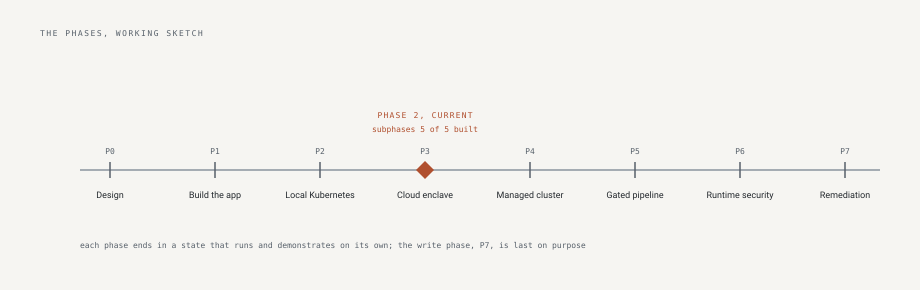

control-plane
One person's public record of building a security engineering program with an AI agent doing the typing and a human deciding everything.
It exists to show, with evidence rather than claims, that agent-built software can be held to a professional standard: every decision recorded with what was rejected, every control proven by a test, every release attested, and every agent mistake written down with what caught it.
- role-call: an inventory and review tool for cloud service accounts and roles. Import snapshots, see who owns what, run review campaigns. 157 tests, 62 recorded decisions, five outside ratings.
- build-doctrine: the rulebook the program builds under, and the commands that score any repository against it.
- secure-expense-mvp: a small finished application, hardened and mutation-tested, kept as the reference.
- The program documents: what is monitored, how recovery works, how every repository is gated, and the next phase's plan.
The parts
role-call
Governance for non-human identities: import cloud identity snapshots, derive state from history rather than storing status, put owners and review campaigns on the record. Building in motion: fifty recorded decisions and the record of what the coding agent got wrong, kept on purpose.
secure-expense-mvp
A small expense tool, finished and hardened: every request-path gate tied to the failure it prevents, mutation-tested, deliberately complete.
build-doctrine
The doctrine: standards where every rule records the incident that produced it, and the promotion path from human check to automated gate.
aws-platform
Arrives with Phase 3: generic Terraform modules for an organization, its baseline, account vending, and keyless deploy federation.
The program documents
The things one repository cannot answer for, kept here:
- The plan for the current phase, written and published before the work starts, so a change of plan is a recorded decision and not a quiet edit.
- Monitoring: what is watched at each layer, what signal it gives, and who hears it. A layer with nothing watching it says so.
- Recovery: what can be rebuilt from code and what is real state that must be backed up. Each recovery drill carries the date it last ran and goes stale on a schedule.
- Pipelines: how every repository blocks a bad change, and how the tools that do the blocking are themselves verified before they run.
The method
- Design first. The plan is public before the first line of code.
- Every change is a pull request: the agent proposes under its own identity, the checks must pass, a human must approve, and the merge is the receipt.
- Every figure in a document is checked against the running system, or a test fails.
- Every mistake becomes a rule, and the second time a fix is done by hand it becomes automation.
- What was left out on purpose is written down beside what was built.
The arc

- Design, before any code
- The application, twelve review-gated subphases
- Local Kubernetes: admission, network policy, identity
- The cloud enclave as code, in progress
- Managed Kubernetes
- The security-gated pipeline, proven by a planted flaw
- Runtime detection and response
- Human-triggered remediation, last, because write access is earned